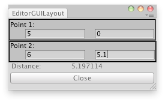

EditorGUILayout.Vector2Field
public static Vector2 Vector2Field(GUIContent label,
Vector2 value,
params GUILayoutOption[] options);
Parameters
| label | Label to display above the field. | |
| value | The value to edit. | |
| options | An optional list of layout options that specify extra layout properties. Any values passed in here will override settings defined by the style. |
Returns
Vector2 The value entered by the user.
Description 描述
Make an X & Y field for entering a Vector2.

Measure the distance between 2 points.
using UnityEditor; using UnityEngine;
public class EditorGUILayoutVector2Field : UnityEditor.EditorWindow { float distance = 0f; Vector3 p1; Vector3 p2;
[MenuItem("Examples/Measure Distance")] static void Init() { EditorGUILayoutVector2Field window = (EditorGUILayoutVector2Field)EditorWindow.GetWindow(typeof(EditorGUILayoutVector2Field), true, "My Empty Window"); window.Show(); }
void OnGUI() { p1 = EditorGUILayout.Vector2Field("Point 1:", p1); p2 = EditorGUILayout.Vector2Field("Point 2:", p2); EditorGUILayout.LabelField("Distance:", distance.ToString()); if (GUILayout.Button("Close")) this.Close(); }
void OnInspectorUpdate() { distance = Vector2.Distance(p1, p2); this.Repaint(); } }